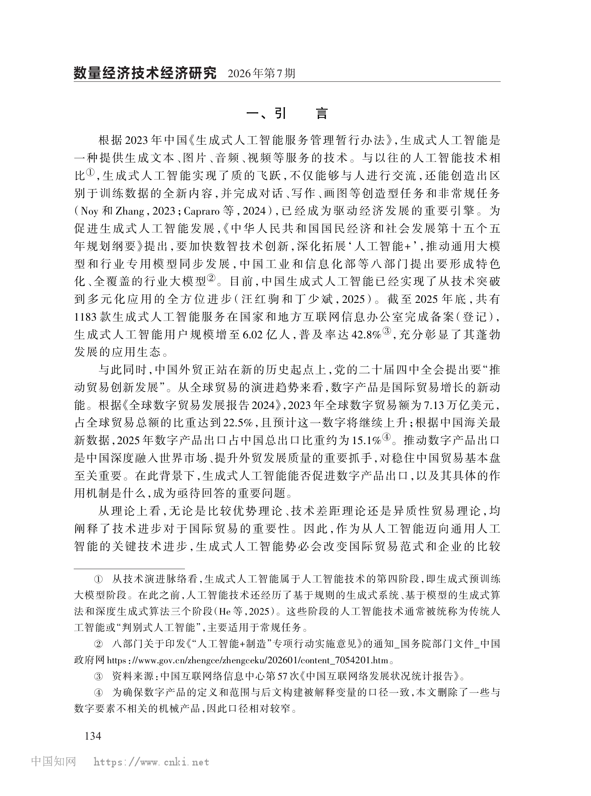
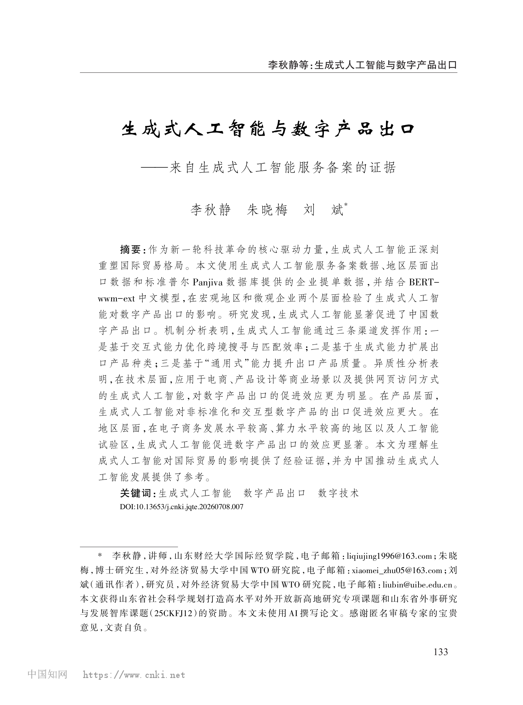

数量经济技术经济研究
2026 年第 7 期
COURSE PAPER PRESENTATION · 课程论文汇报
生成式人工智能 与数字产品出口
——来自生成式人工智能服务备案的证据
论文作者
李秋静 · 朱晓梅 · 刘斌
PAPER AT A GLANCE · 论文全景
作者如何回答这个问题？
研究路径
问题 → 证据 → 解释 → 评价
ORIGINAL TEXT / 论文原文
01 / 06


FROM SUMMARY TO ASSESSMENT
从作者的结论，进入我们的判断
研究贡献 · 识别假设 · 测量局限 · 结论边界
原文：论文第 2 页引言
蓝色标注为作者论证，红色标注为汇报者分析
RESEARCH MOTIVATION · 研究动机
两股趋势正在交汇，但经验研究尚未跟上
生成式 AI 已从技术突破走向规模化应用；与此同时，数字产品正成为国际贸易的新增长点。
A
TECHNOLOGY DIFFUSION
生成式 AI 加速扩散
CONVERGENCE
?
技术扩散能否转化为出口增长？
B
TRADE TRANSFORMATION
数字贸易成为新动能
01 · 已有研究
技术进步会改变贸易
工业机器人和传统人工智能可以提高生产率、降低成本，并促进出口扩张与产品升级。
工业机器人生产率出口表现
02 · 尚未回答
生成式 AI 的独特能力如何进入贸易环节？
既有生成式 AI 研究主要关注劳动力市场与创新，对跨境匹配、产品创造和质量提升仍缺少系统证据。
03 · 本文推进
从宏观与微观两端建立证据链
视角 生成式 AI × 数字产品出口
机制 匹配、种类与质量
测量 备案数据与 BERT 识别
THEORETICAL MECHANISMS · 理论机制
生成式 AI 如何进入数字产品出口链条？
作者将生成式 AI 的三类技术能力，分别对应到跨境交易、产品创造与质量升级三个环节。
技术能力
企业行为变化
作用环节
理论结果与可检验预测
DATA ARCHITECTURE · 数据与变量
原始数据如何被转化为可回归的证据？
论文并不直接观察每家企业是否使用生成式 AI，而是用地区服务备案数量刻画技术应用水平。
数据来源
原始信息
处理与匹配
进入模型的变量
EXPOSURE
01
CAC
国家及地方网信办
生成式 AI 服务备案与登记信息
服务名称 · 企业 · 所在地
2024 年 4、8、11 月版
2025 年 1、3、6 月版
2025 年 1、3、6 月版
→
按企业所在地与季度加总
将备案、登记数量转为地区累计值
GenAIit
地区累计备案数量
核心解释变量
OUTCOME
02
HS8
海关统计查询平台
地区—月份—HS8 产品出口
产品编码 · 名称 · 出口额
先获得广义数字产品候选集合
→
BERT 识别后按季度加总
基准文本相似度阈值为 60%
ln Exportipt
数字产品出口额对数
核心被解释变量
CONTROLS
03
REG
地区统计与政策资料
统计年鉴、知识产权局、百度指数等
经济 · 技术 · 基础设施
AI 搜索、AI 专利与相关试验区
→
统一至地区—季度口径
控制可能同时影响 AI 与出口的因素
Controlsit
地区控制变量组
减少遗漏变量偏误
MICRO CHECK
04
B/L
S&P Global Panjiva
全球港口、海关与物流公司的提单
企业 · 产品 · 发货记录
筛选 2020—2024 年中国出口企业
→
匹配城市备案与企业 AI 能力
招聘信息和 AI 专利用于补充测量
F_Exportcft
企业数字产品出口
微观层面的结论复核
SAMPLE WINDOW
宏观基准样本
地区 i × HS8 产品 p × 季度 t
2021Q1样本起点
2023Q3首个服务于 8 月 31 日备案
2025Q2样本终点 · 共 18 期
BASELINE N
125,537
地区—产品—季度观测值
MEASUREMENT DESIGN · 数字产品识别
“数字产品”不是现成变量：作者如何识别它？
先用产业分类限定边界，再用 BERT 进行语义筛选，降低单纯依赖人工关键词带来的口径偏差。
01
DEFINE
界定产业边界
选取《数字经济及其核心产业统计分类（2021）》中的“01 数字产品制造业”。
01
数字产品制造业
02
MAP
完成编码映射
将国民经济行业分类逐级映射到国际行业和海关产品编码。
GB/T 2017→ISIC→HS6→HS8
03
BUILD
构建数字产品文本库
清理产业说明，删除停用词及与产品核心属性无关的修饰语，保留关键名词和形容词。
核心属性技术内涵产品功能
加工制造
04
ENCODE
BERT 计算语义相似度
比较每个广义数字产品的名称、描述与数字产品文本库之间的语义距离。
BERT
wwm-ext
05
CLASSIFY
依据阈值分类
文本相似度达到基准阈值时，认定为数字产品；否则从候选集合中剔除。
≥ 60% 数字产品
< 60% 非数字产品
SEMANTIC FILTER
语义筛选标尺
流程示意，不代表某一具体产品的实际得分
0%低相似度高相似度100%
候选产品
数字产品
60%
基准识别阈值
OUTPUT
地区—季度—HS8 数字产品出口
与海关出口额匹配并按季度汇总
ROBUSTNESS
作者如何检查识别口径？
60% 基准
65%
70%
75%
替代口径 A 联合国 ICT 产品
替代口径 B “01 数字产品制造业”对应产品
EMPIRICAL STRATEGY · 基准模型
作者如何从相关性中识别生成式 AI 的净效应？
基准回归同时利用地区、产品和季度三个维度的变化，并用多维固定效应排除系统性差异。
BASELINE SPECIFICATION
地区 i × 产品 p × 季度 t
Exportipt
出口结果
=
α0
+
β1 GenAIit
目标系数
+
β2 Controlsit
可观测控制
+
νi + νp + νt
多维固定效应
+
εipt
剩余扰动
本文关心
β1
OUTCOME
被解释变量
Exportipt
地区 i 在季度 t 对 HS8 数字产品 p 的出口额对数。
回答：出口表现发生了什么变化？TREATMENT
核心解释变量
GenAIit
地区 i 截至季度 t 累计备案、登记的生成式 AI 服务数量。
β₁ 衡量每新增一个备案服务的边际影响。OBSERVABLES
可观测控制
Controlsit
AI 搜索、AI 专利、政策试验区及地区经济、基础设施等变量。
降低可观测混杂因素造成的偏误。FIXED EFFECTS
不可观测的系统差异
νi · νp · νt
控制地区长期特征、产品固有属性和共同季度冲击。
更严格设定还加入时间 × 产品固定效应。REMAINING RISK
仍不能完全排除
Export → GenAI ?
出口表现较好的地区，也可能更容易研发、备案和使用生成式 AI。
因此还需要工具变量与稳健性检验。
IDENTIFICATION AUDIT
基准模型已经控制什么？
νi
地区固定效应
发展基础、区位等长期差异
νp
产品固定效应
产品固有需求和技术属性
νt
时间固定效应
汇率、周期等共同季度冲击
SE
聚类稳健标准误
使用多种聚类口径复核显著性
BASELINE RESULTS · 基准结果
核心系数在不同模型设定下保持稳定
表 1 的四种设定均得到正向且显著的估计结果，系数集中在 0.003—0.004。
COEFFICIENT STABILITY
生成式 AI 水平的估计系数
点估计
根据报告标准误绘制的约 95% 区间
0.0000.0020.0040.006
M1
基础控制
时间、地区、产品固定效应
0.004***(0.001)
M2
加入政策控制
论文选定的基准结果
0.004**(0.001)
M3
时间 × 产品固定效应
排除产品面临的共同时间冲击
0.003**(0.001)
M4
更换聚类口径
地区与时间层面的聚类标准误
0.004***(0.001)
TABLE 1
不同列改变了什么？
(1)部分控制变量产品 × 地区聚类
(2)增加两类政策控制作为基准结果解释
(3)增加时间 × 产品固定效应N = 125,521
(4)更换标准误聚类层级地区 × 时间聚类
IDENTIFICATION CHECKS · 内生性与稳健性
核心结果可靠吗？作者构建了怎样的证据链？
基准回归之后，论文继续处理反向因果、随机相关、产品口径和技术扩散时滞等问题。
INSTRUMENTAL VARIABLES
利用历史基础设施与全球技术周期的交互
历史禀赋提供地区差异，美国生成式 AI 服务数量提供时间变化。
IVⅠ
地区 1984 年用电量
×
美国当期生成式 AI 服务数量
相关性 电力基础有利于承载算力设施
外生性要求 不通过其他长期路径直接影响当前出口
IVⅡ
地区 1984 年邮电局数量
×
美国当期生成式 AI 服务数量
相关性 早期通信节点影响后续数字基础设施
外生性要求 不独立推动当前数字产品出口
TABLE 2
识别强度与第二阶段结果
IV Ⅰ
β̂ = 0.005***
SE = 0.002
IV Ⅱ
β̂ = 0.005***
SE = 0.002
KP rk LM
54.531 / 43.688
p = 0.000
KP rk Wald F
92.237 / 77.750
均高于 16.38 临界值
ROBUSTNESS MATRIX
换一种检验方式，结论是否仍然成立？
01
随机性与测量门槛
安慰剂检验 + 更高识别阈值
随机设置“伪处理组”并重复 500 次；系数均值接近零，多数不显著。将 BERT 阈值提高至 65%、70%、75% 后结论不变。
通过
02
替代口径与比较组
ICT 产品定义 + 三重差分
使用联合国 ICT 产品和统计分类对应产品替换数字产品定义；DDD 结果显示，相比非数字产品，数字产品受到的促进作用更大。
一致
03
技术成熟度与外部验证
阶段效应 + 滞后效应 + 企业数据
第一技术阶段不显著，第二、第三阶段开始显现；滞后一期、两期仍显著；Panjiva 企业层面的检验方向一致。
一致
WHAT THE TESTS SHOW
工具变量与地区生成式 AI 水平具有较强相关性，未出现弱工具变量问题。
≠
WHAT REMAINS AN ASSUMPTION
历史电力、邮电基础不会通过其他长期发展路径直接影响当前出口。
MECHANISM EVIDENCE · 机制与异质性
三条理论路径是否得到数据支持？
作者为每条机制寻找可观测结果，并进一步判断哪些技术、产品和地区更容易把 AI 转化为出口增长。
HYPOTHESES H1—H3
从理论预测到可观测结果
*** p<0.01** p<0.05* p<0.10n.s. 不显著
H1
搜寻匹配效率
交互式能力
客服响应速度
0.001**
企业层面
数字人直播
0.006**
企业层面
体验品0.004**
搜寻品0.002 n.s.
文化距离远0.009***
文化距离近0.006***
SUPPORTED假说 1
H2
出口产品种类
生成式能力
定制化生产能力
0.003*
企业层面
出口产品种类
0.838***
地区层面
小众产品0.005**
主流产品0.002 n.s.
SUPPORTED假说 2
H3
出口产品质量
“通用”式能力
技术复杂度
0.004***
出口产品价格
0.002**
SUPPORTED假说 3
ACADEMIC ASSESSMENT · 学术评价
这篇论文贡献在哪里，结论的边界又在哪里？
评价的重点不是否定结果，而是区分“论文证明了什么”与“仍需依赖哪些测量和识别假设”。
WHAT THE PAPER ADDS
三项清晰的边际贡献
RESEARCH PERSPECTIVE
将生成式 AI 引入国际贸易研究
区别于工业机器人和判别式 AI，直接考察生成式 AI 与数字产品出口之间的关系。
MECHANISM FRAMEWORK
把技术能力映射到贸易环节
以交互式、生成式和“通用”式能力解释匹配、产品范围和质量升级。
MEASUREMENT & EVIDENCE
构造新的数据与测量方案
结合备案数据、BERT 产品识别、地区海关数据与 Panjiva 企业提单，形成宏观—微观证据链。
WHERE INTERPRETATION NEEDS CARE
四个值得继续追问的问题
备案数量是否等于真实使用强度？
备案更接近公开服务供给和区域技术生态，无法直接观察出口企业实际调用频率、使用环节和投入规模。
解释影响
β₁ 可能同时包含直接使用、示范效应和区域外溢。
工具变量的排除性是否充分？
1984 年电力和邮电基础可能通过长期产业积累、基础设施和人力资本等路径直接影响当前出口。
解释影响
强工具变量不等于排除性假设已经被验证。
后处理时期仍然较短
首个备案发生在 2023Q3，样本止于 2025Q2，可观察到的生成式 AI 扩散窗口不足两年。
解释影响
长期生产率、组织调整和产品迭代效应仍有待观察。
数字产品不等于全部数字贸易
结果主要覆盖可由海关 HS 编码识别的数字产品，不能直接外推到软件、平台和在线内容等数字服务。
解释影响
论文标题中的“数字产品”需要按照其较窄的数据口径理解。
NEXT RESEARCH
如果继续研究，可以补充什么？
企业 API / 采购 / 使用日志
→
更长的技术扩散窗口
→
空间外溢与跨地区使用
→
数字服务贸易数据
CONCLUSION · 研究结论
生成式 AI 能促进数字产品出口，但这种赋能不会自动发生
生成式 AI 能否转化为数字产品出口增长？
论文的回答
能
地区每新增一个备案服务，其某一 HS8 数字产品出口额平均增加约 0.4%
通过什么渠道？
跨境搜寻匹配效率
→
出口产品种类
→
出口产品质量
什么条件下更有效？
行业垂类模型商业场景网页 / 云端访问
非标准化产品交互型产品
高电商基础高算力AI 试验区
政策含义是什么？
场景 从通用工具走向设计、营销、客服等贸易环节
条件 补齐算力、电商平台、人才与区域基础设施
治理 明确数据、知识产权、内容合规与责任边界
生成式 AI 会降低企业出海门槛，还是进一步放大地区之间的数字鸿沟？
这也是论文结论留给后续研究与政策实践的问题。